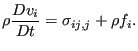
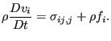
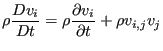
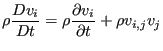

Keyword type: model definition, material
With this option the specific heat at constant pressure and the dynamic viscosity of a gas or liquid can be defined. These properties are required for fluid dynamic network calculations. They can be temperature dependent.
First line:
Following line:
Example: *FLUID CONSTANTS 1.032E9,71.1E-13,100.
defines the specific heat and dynamic viscosity for air at 100  in a unit
system using N, mm, s and K:
 mm
in a unit
system using N, mm, s and K:
 mm s
s K and
 N s
K and
 N s mm
mm .
.
Example files: linearnet, branch1, branch2.